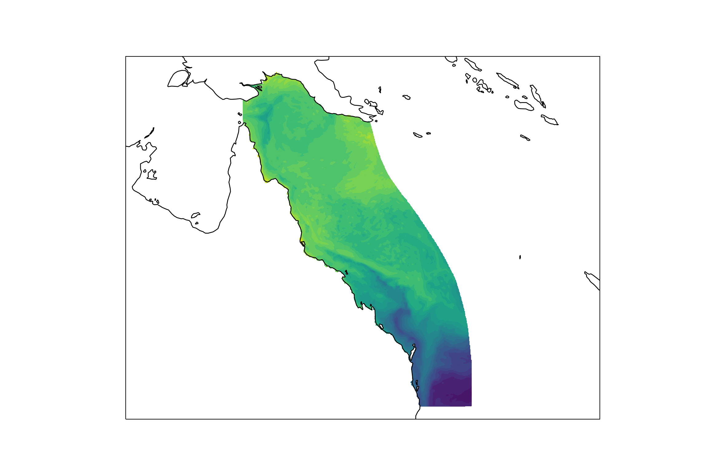

from netCDF4 import Dataset, num2date
import matplotlib.pyplot as plt
import cartopy
import cartopy.crs as ccrs
import os
cartopy.config['data_dir'] = os.getenv('CARTOPY_DIR', cartopy.config.get('data_dir'))Accessing eReefs data from the AIMS server
Basic access with OPeNDAP
Learn the basics of extracting eReefs data from the AIMS server with OPeNDAP in python.
In this tutorial we will look at how to access eReefs data directly from the AIMS THREDDS server in python.
This server hosts aggregated eReefs model data in netCDF file format and offers access to the data files via OPeNDAP, HTTP Server, and Web Map Service (WMS). While we could download the data files manually via the HTTPServer link, this approach is cumbersome when downloading multiple files, given their large size. Thankfully, OPeNDAP provides a way to access the data files over the internet and extract only the data we want.
For example, say we want the daily mean surface temperature at a single location for the last 30 days. If we were to download the 30 individual daily aggregated netCDF files, with each file ~ 350 Mb, this would require us to download over 10 Gb of data just to get 300 numbers. The vast majority of this data would be irrelevant to our needs as the netCDF files contain data for a range of variables, at a range of depths, for many, many locations. However, with OPeNDAP, we can extract the daily mean values directly from the server without downloading any unneeded data.
Motivating problem
We will extract the daily mean water temperature for the 10th of December 2022 at 1.5 m depth across the entire scope of the eReefs model. We will then plot this data. This example will introduce the basics of how to connect to files on the server and extract the data we want.
Python libraries
Connect to a file on the server
First we need to find the right NetCDF file on the server. The available eReefs data NetCDF files are listed in the AIMS THREDDS Server catalogue. We will navigate to the eReefs 4 km Hydrodynamic Model daily aggregated data for the month of December 2022 and copy the OPeNDAP data URL.

input_file = "https://thredds.ereefs.aims.gov.au/thredds/dodsC/s3://aims-ereefs-public-prod/derived/ncaggregate/ereefs/gbr4_v2/daily-monthly/EREEFS_AIMS-CSIRO_gbr4_v2_hydro_daily-monthly-2022-12.nc"We can then open a connection to this file using the Dataset function from the netCDF4 library.
dailyAggDec22_nc = Dataset(input_file)If you wish to download NetCDF files from the server you can click the HTTPServer link instead of OPeNDAP. The file can then be loaded into python by specifying the path: Dataset("<path to downloaded file>").
Examine file structure
If we wish to look at the structure of the file we have connected to, including what variables and dimensions are available, we access the various attributes below.
dailyAggDec22_nc.title
'eReefs AIMS-CSIRO GBR4 Hydrodynamic v2 daily aggregation'
dailyAggDec22_nc.description
'Aggregation of raw hourly input data (from eReefs AIMS-CSIRO GBR4 Hydrodynamic v2 subset) to daily means. Also calculates mean magnitude of wind and ocean current speeds. Data is regridded from curvilinear (per input data) to rectilinear via inverse weighted distance from up to 4 closest cells.'
dailyAggDec22_nc.dimensions
{'time': <class 'netCDF4._netCDF4.Dimension'> (unlimited): name = 'time', size = 31, 'k': <class 'netCDF4._netCDF4.Dimension'>: name = 'k', size = 17, 'latitude': <class 'netCDF4._netCDF4.Dimension'>: name = 'latitude', size = 723, 'longitude': <class 'netCDF4._netCDF4.Dimension'>: name = 'longitude', size = 491}
dailyAggDec22_nc.variables
{'mean_cur': <class 'netCDF4._netCDF4.Variable'>
float32 mean_cur(time, k, latitude, longitude)
puv__parameter: http://vocab.nerc.ac.uk/collection/P01/current/LCEWMP01/
coordinates: time zc latitude longitude
units: ms-1
short_name: mean_cur
aggregation: mean_speed
standard_name: mean_current_speed
long_name: mean_current_speed
_ChunkSizes: [ 1 1 133 491]
unlimited dimensions: time
current shape = (31, 17, 723, 491)
filling off, 'salt': <class 'netCDF4._netCDF4.Variable'>
float32 salt(time, k, latitude, longitude)
qudt__unit: http://qudt.org/vocab/unit/PSU
puv__parameter: http://vocab.nerc.ac.uk/collection/P01/current/PSLTMP01/
coordinates: time zc latitude longitude
short_name: salt
aggregation: Daily
units: PSU
long_name: Salinity
_ChunkSizes: [ 1 1 133 491]
unlimited dimensions: time
current shape = (31, 17, 723, 491)
filling off, 'temp': <class 'netCDF4._netCDF4.Variable'>
float32 temp(time, k, latitude, longitude)
puv__parameter: https://vocab.nerc.ac.uk/collection/P01/current/TEMPMP01/
coordinates: time zc latitude longitude
short_name: temp
aggregation: Daily
units: degrees C
long_name: Temperature
_ChunkSizes: [ 1 1 133 491]
unlimited dimensions: time
current shape = (31, 17, 723, 491)
filling off, 'u': <class 'netCDF4._netCDF4.Variable'>
float32 u(time, k, latitude, longitude)
vector_components: u v
puv__parameter: http://vocab.nerc.ac.uk/collection/P01/current/LCEWMP01/
coordinates: time zc latitude longitude
short_name: u
standard_name: eastward_sea_water_velocity
vector_name: Currents
aggregation: Daily
units: ms-1
long_name: Eastward current
_ChunkSizes: [ 1 1 133 491]
unlimited dimensions: time
current shape = (31, 17, 723, 491)
filling off, 'v': <class 'netCDF4._netCDF4.Variable'>
float32 v(time, k, latitude, longitude)
vector_components: u v
puv__parameter: http://vocab.nerc.ac.uk/collection/P01/current/LCNSMP01/
coordinates: time zc latitude longitude
short_name: v
standard_name: northward_sea_water_velocity
vector_name: Currents
aggregation: Daily
units: ms-1
long_name: Northward current
_ChunkSizes: [ 1 1 133 491]
unlimited dimensions: time
current shape = (31, 17, 723, 491)
filling off, 'zc': <class 'netCDF4._netCDF4.Variable'>
float64 zc(k)
units: m
positive: up
long_name: Z coordinate
axis: Z
coordinate_type: Z
_CoordinateAxisType: Height
_CoordinateZisPositive: up
unlimited dimensions:
current shape = (17,)
filling off, 'time': <class 'netCDF4._netCDF4.Variable'>
float64 time(time)
units: days since 1990-01-01 00:00:00 +10
long_name: Time
standard_name: time
coordinate_type: time
puv__uom: http://vocab.nerc.ac.uk/collection/P06/current/UTAA/
calendar: gregorian
_CoordinateAxisType: Time
_ChunkSizes: 1024
unlimited dimensions: time
current shape = (31,)
filling off, 'latitude': <class 'netCDF4._netCDF4.Variable'>
float64 latitude(latitude)
units: degrees_north
long_name: Latitude
standard_name: latitude
coordinate_type: latitude
projection: geographic
puv__ofProperty: http://vocab.nerc.ac.uk/collection/S06/current/S0600045/
puv__uom: http://vocab.nerc.ac.uk/collection/P06/current/DEGN/
_CoordinateAxisType: Lat
unlimited dimensions:
current shape = (723,)
filling off, 'longitude': <class 'netCDF4._netCDF4.Variable'>
float64 longitude(longitude)
puv__uom: http://vocab.nerc.ac.uk/collection/P06/current/DEGE/
units: degrees_east
long_name: Longitude
standard_name: longitude
coordinate_type: longitude
projection: geographic
_CoordinateAxisType: Lon
unlimited dimensions:
current shape = (491,)
filling off, 'mean_wspeed': <class 'netCDF4._netCDF4.Variable'>
float32 mean_wspeed(time, latitude, longitude)
puv__parameter: http://vocab.nerc.ac.uk/collection/P01/current/ESEWMPXX/
coordinates: time latitude longitude
units: ms-1
short_name: mean_wspeed
aggregation: mean_speed
standard_name: mean_wind_speed
long_name: mean_wind_speed
_ChunkSizes: [ 1 133 491]
unlimited dimensions: time
current shape = (31, 723, 491)
filling off, 'eta': <class 'netCDF4._netCDF4.Variable'>
float32 eta(time, latitude, longitude)
puv__parameter: https://vocab.nerc.ac.uk/collection/P01/current/ASLVMP01/
coordinates: time latitude longitude
short_name: eta
standard_name: sea_surface_height_above_geoid
aggregation: Daily
units: metre
positive: up
long_name: Surface elevation
_ChunkSizes: [ 1 133 491]
unlimited dimensions: time
current shape = (31, 723, 491)
filling off, 'wspeed_u': <class 'netCDF4._netCDF4.Variable'>
float32 wspeed_u(time, latitude, longitude)
puv__parameter: http://vocab.nerc.ac.uk/collection/P01/current/ESEWMPXX/
coordinates: time latitude longitude
short_name: wspeed_u
aggregation: Daily
units: ms-1
long_name: eastward_wind
_ChunkSizes: [ 1 133 491]
unlimited dimensions: time
current shape = (31, 723, 491)
filling off, 'wspeed_v': <class 'netCDF4._netCDF4.Variable'>
float32 wspeed_v(time, latitude, longitude)
puv__parameter: http://vocab.nerc.ac.uk/collection/P01/current/ESNSMPXX/
coordinates: time latitude longitude
short_name: wspeed_v
aggregation: Daily
units: ms-1
long_name: northward_wind
_ChunkSizes: [ 1 133 491]
unlimited dimensions: time
current shape = (31, 723, 491)
filling off}Extract data
Now that we have an open connection to a file on the server we need to extract the daily mean temperature at 1.5m depth for the 10th of December.
From the dailyAggDec22.variables output above we can see that the variable corresponding to temperature is: \(\texttt{ temp(time, k, latitude, longitude)}\).
The dimensions for temperature are in brackets. This means that there is a temperature value for every combination of longitude, latitude, depth (k) and time. We can now see why these NetCDF files are so large.
To extract data from the file we need to access the variable of interest using the structure
<file>.variables[<variable name>][<dimension 1 indices>, <dim. 2 indices>, ...]
Here we access the values for the given variable at certain indexes along each dimension.
Therefore, we need the following:
- file: an eReefs NetCDF file connection; in our case
dailyAggDec22.nc. - variable name: the name of the data variable we wish to extract; in our case
"temp". - dimension indices: a vector specifying for which indices of each dimension to extract the temperature values.
Let’s look at how to construct the vector of dimension indices.
Time: Since we have the daily aggregated data for December 2022, and are interested only in a single day (the 10th), time is a constant value; i.e. we have a single index for which to extract. From the dailyAggDec22.dimensions output we can see we have 31 time indexs, these correspond to the day of the month, therefore we want the time=10.
Depth: Again we have a constant value of interest (1.5 m). The index k corresponds to different depths as shown in the table below, where we see that for the 4km models k=16 maps to a depth of 1.5 m.
Table of eReefs depths corresponding to index k
| Index k (R) | Index k (Python) | Hydrodynamic 1km model | Hydrodynamic & BioGeoChemical 4km models |
|---|---|---|---|
| 1 | 0 | -140.00 | -145.00 |
| 2 | 1 | -120.00 | -120.00 |
| 3 | 2 | -103.00 | -103.00 |
| 4 | 3 | -88.00 | -88.00 |
| 5 | 4 | -73.00 | -73.00 |
| 6 | 5 | -60.00 | -60.00 |
| 7 | 6 | -49.00 | -49.00 |
| 8 | 7 | -39.50 | -39.50 |
| 9 | 8 | -31.00 | -31.00 |
| 10 | 9 | -24.00 | -23.75 |
| 11 | 10 | -18.00 | -17.75 |
| 12 | 11 | -13.00 | -12.75 |
| 13 | 12 | -9.00 | -8.80 |
| 14 | 13 | -5.25 | -5.55 |
| 15 | 14 | -2.35 | -3.00 |
| 16 | 15 | -0.50 | -1.50 |
| 17 | 16 | NA | -0.50 |
Longitude and latitude: We want temperatures for every available longitude and latitude so we can plot the data across the entire spatial range of the eReefs model. Therefore we want every index of latitude and longitude. In python this is easily specified by using the notation vector[:] which can be though of as short hand for vector[<minimum index>: <maximum index>].
# EXTRACT DATA
temps_10Dec22_1p5m = dailyAggDec22_nc.variables['temp'][
10, # time index --> 10th day of month
16, # depth index k --> 1.5m depth
:, # latitude indices --> all possible
:, # longitude indices --> all possible
]
temps_10Dec22_1p5mmasked_array(
data=[[ nan, nan, nan, ..., nan, nan,
nan],
[ nan, nan, nan, ..., 22.950163, 22.948303,
22.942863],
[ nan, nan, nan, ..., 22.945545, 22.947357,
22.934599],
...,
[ nan, nan, nan, ..., nan, nan,
nan],
[ nan, nan, nan, ..., nan, nan,
nan],
[ nan, nan, nan, ..., nan, nan,
nan]],
mask=False,
fill_value=1e+20,
dtype=float32)Plot data
Let’s plot the data. To do this we will need to extract the longitude and latitude variables from the open server file.
lons = dailyAggDec22_nc.variables["longitude"][:]
lats = dailyAggDec22_nc.variables["latitude"][:]# Setup plot canvas
plt.figure(figsize=(12, 8), dpi=80, facecolor='w', edgecolor='k')
ax = plt.axes(projection=ccrs.PlateCarree())
ax.set_extent([135, 165, -6.5, -29.5], ccrs.PlateCarree())
# Add the data to the plot
plt.contourf(lons, lats, temps_10Dec22_1p5m, 30, transform=ccrs.PlateCarree())
# Add landmass coastlines shapefile<cartopy.mpl.contour.GeoContourSet object at 0x000001B5455B79A0>ax.coastlines()
# Show plot
plt.show()
Hooray! We can now see in Figure 1 that our data was extracted successfully.
Close file connection
Now that we are done with the openned server file it is best practice to close it.
dailyAggDec22_nc.close()